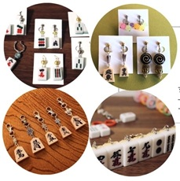
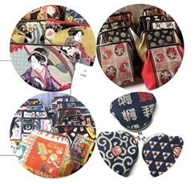
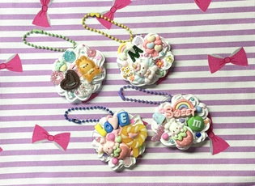
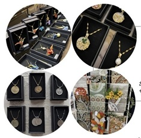

作品紹介
宮島の自然や文化をテーマにしたハンドメイド作品を紹介します。
ひとつひとつ丁寧に作られた作品は、旅の思い出にもぴったりです。
【紹介アーティスト目次】
うめたま

和風アクセサリー・キーホルダーなど
質の良いパーツを使って一点一点、丁寧に丈夫に作っています。ミニチュアの将棋 of 駒や麻雀牌、金平糖ビーズ、大仏様など一風変わったパーツのアクセサリーは外国からのお客様にも人気です。
coton（コトン）

和の生地を使ったがま口や小物・デコワークショップ
懐かしいレトロ生地や畳の縁を使ってがま口を作っています。だるま刺繍を入れた人気の小銭入れ、通帳や小物入れに便利な和柄ポーチや手さげ袋など日常使いの小物としてお土産に選ばれる方も多いです。
【ワークショップ開催のお知らせ】

親子で作ろう！デコワークショップ
好きなパーツを選んで自分だけのオリジナルグッズが作れる体験型ワークショップを開催！みんなで一緒にデコっちゃおう☆
- キーホルダー：600円
- マグネット：400円
y's charm（ワイズチャーム）

コインとカエルと鶴のアクセサリー
おもに発行の終了した美しいビンテージのコインやカエル（無事カエル・お金がカエル）を使って「つけたら何かいい事ありそう」なアクセサリーや小物を作っています。鶴のアクセサリーは外国の方に人気です。